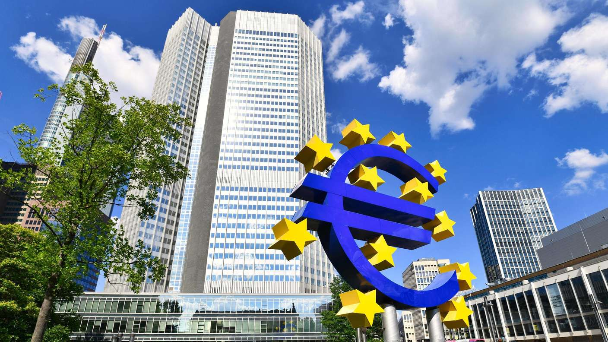

Geographie | Klasse 10
Der Euro (€) ist mehr als ein Zahlungsmittel: Er verbindet Staaten mit unterschiedlichen Wirtschaftsstrukturen zu einem gemeinsamen Währungsraum. Innerhalb dieses Raums entfallen Wechselkurse; gleichzeitig gibt es eine gemeinsame Geldpolitik für alle Euro-Länder.
Vertiefung: Die zentrale Frage lautet nicht nur „Ist der Euro praktisch?“, sondern: Passt eine gemeinsame Währung zu sehr unterschiedlichen Regionen Europas?

Quelle: Europäische Kommission / EZB, Stand Mai 2026.
| Jahr | Neue Euro-Länder | Gesamtzahl | räumliche Bedeutung |
|---|---|---|---|
| 1999 | Belgien, Deutschland, Finnland, Frankreich, Irland, Italien, Luxemburg, Niederlande, Österreich, Portugal, Spanien | 11 | Start vor allem in West-, Nord- und Südeuropa |
| 2001 | Griechenland | 12 | Erweiterung im südöstlichen Mittelmeerraum |
| 2007 | Slowenien | 13 | erstes neues EU-Mitglied Mittel-/Südosteuropas im Euro |
| 2008 | Malta, Zypern | 15 | Inselstaaten im Mittelmeer werden Teil des Währungsraums |
| 2009 | Slowakei | 16 | Ausbreitung nach Mitteleuropa |
| 2011 | Estland | 17 | Beginn der baltischen Euro-Erweiterung |
| 2014 | Lettland | 18 | baltischer Raum wird stärker eingebunden |
| 2015 | Litauen | 19 | alle drei baltischen Staaten im Euro-Raum |
| 2023 | Kroatien | 20 | Adriaraum stärker integriert |
| 2026 | Bulgarien | 21 | weitere Ausdehnung nach Südosteuropa |
Nicht-Euro-Länder der EU 2026: Dänemark, Polen, Rumänien, Schweden, Tschechien und Ungarn nutzen weiterhin nationale Währungen. Damit bleibt Europa währungspolitisch zweigeteilt.
Wichtig: Der Euro erklärt den europäischen Handel nicht allein. Auch Binnenmarkt, Infrastruktur, EU-Regeln, Unternehmensnetzwerke und Nachbarschaftseffekte sind entscheidend.
EU-Warenexporte 2025 in Milliarden Euro. Die Daten beziehen sich auf die EU insgesamt, nicht nur auf den Euro-Raum.
Quelle: Eurostat, vorläufige Jahreswerte 2025. Intra-EU-Handel: 4.143,2 Mrd. €; Extra-EU-Exporte: 2.644,1 Mrd. €.
| Bereich | + Chancen | − Herausforderungen / Grenzen |
|---|---|---|
| Alltag & Reisen | Menschen können in vielen Ländern ohne Geldwechsel bezahlen. Preise für Hotels, Bahnfahrten oder Produkte lassen sich direkter vergleichen. | Preissteigerungen werden nach Währungsumstellungen oft besonders stark wahrgenommen; außerdem bleiben Lebenshaltungskosten regional sehr verschieden. |
| Unternehmen & Handel | Wechselgebühren und Wechselkursrisiken innerhalb des Euro-Raums entfallen. Das erleichtert Kalkulation, Lieferverträge und Investitionen über Grenzen hinweg. | Der Euro beseitigt keine Unterschiede bei Löhnen, Steuern, Energiepreisen, Infrastruktur oder Produktivität. Wettbewerb kann deshalb regionalen Druck erhöhen. |
| Binnenmarkt | Eine gemeinsame Währung ergänzt den EU-Binnenmarkt: Waren, Dienstleistungen, Kapital und Arbeit können leichter über Grenzen fließen. | Der Euro ist nicht allein für Handel verantwortlich. Auch Lage, Verkehrsnetze, gemeinsame Regeln, Unternehmensnetzwerke und politische Stabilität spielen eine Rolle. |
| Stabilität | Eine große gemeinsame Währung kann Vertrauen schaffen, Kapitalmärkte vertiefen und den Euro-Raum international sichtbarer machen. | Krisen in einzelnen Ländern können schneller auf andere Länder übergreifen, weil Banken, Staaten und Unternehmen finanziell eng verflochten sind. |
| Wirtschaftspolitik | Euro-Staaten müssen stärker zusammenarbeiten und gemeinsame Regeln beachten. Das kann Haushaltsdisziplin und Koordination fördern. | Ein einzelnes Land kann seine Währung nicht mehr abwerten, um Exporte billiger zu machen. Anpassung muss über Preise, Löhne, Produktivität oder staatliche Reformen erfolgen. |
| Raumentwicklung | Grenzräume, exportstarke Industrieregionen und Tourismusregionen können von leichterem Zahlungsverkehr und größerem Absatzraum profitieren. | Schwächere Regionen profitieren nicht automatisch. Ohne Investitionen in Bildung, Infrastruktur und Wettbewerbsfähigkeit können Unterschiede bestehen bleiben oder wachsen. |
Kernproblem: Der Euro verbindet sehr unterschiedliche Räume mit einer gemeinsamen Geldpolitik. Das schafft Vorteile für Handel und Alltag, macht aber regionale Unterschiede nicht automatisch kleiner.